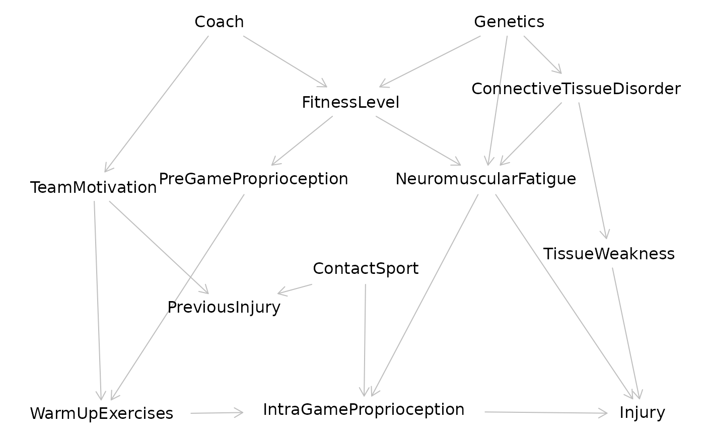

Provides access to the builtin examples of the dagitty website.
Arguments
- x
name of the example, or part thereof. Supported values are:
- "M-bias"
the M-bias graph.
- "confounding"
an extended confounding triangle.
- "mediator"
a small model with a mediator.
- "paths"
a graph with many variables but few paths
- "Sebastiani"
a small part of a genetics study (Sebastiani et al., 2005)
- "Polzer"
DAG from a dentistry study (Polzer et al., 2012)
- "Schipf"
DAG from a study on diabetes (Schipf et al., 2010)
- "Shrier"
DAG from a classic sports medicine example (Shrier & Platt, 2008)
- "Thoemmes"
DAG with unobserved variables (communicated by Felix Thoemmes, 2013)
.
- "Kampen"
DAG from a psychiatry study (van Kampen, 2014)
References
Sabine Schipf, Robin Haring, Nele Friedrich, Matthias Nauck, Katharina Lau, Dietrich Alte, Andreas Stang, Henry Voelzke, and Henri Wallaschofski (2011), Low total testosterone is associated with increased risk of incident type 2 diabetes mellitus in men: Results from the study of health in pomerania (SHIP). The Aging Male 14(3):168–75.
Paola Sebastiani, Marco F. Ramoni, Vikki Nolan, Clinton T. Baldwin, and Martin H. Steinberg (2005), Genetic dissection and prognostic modeling of overt stroke in sickle cell anemia. Nature Genetics, 37:435–440.
Ian Shrier and Robert W. Platt (2008), Reducing bias through directed acyclic graphs. BMC Medical Research Methodology, 8(70).
Ines Polzer, Christian Schwahn, Henry Voelzke, Torsten Mundt, and Reiner Biffar (2012), The association of tooth loss with all-cause and circulatory mortality. Is there a benefit of replaced teeth? A systematic review and meta-analysis. Clinical Oral Investigations, 16(2):333–351.
Dirk van Kampen (2014), The SSQ model of schizophrenic prodromal unfolding revised: An analysis of its causal chains based on the language of directed graphs. European Psychiatry, 29(7):437–48.
Examples
g <- getExample("Shrier")
plot(g)
